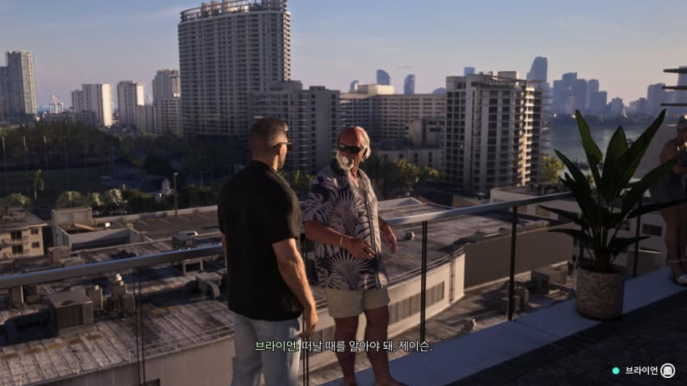
0. 시작하기에 앞서
1챕터 부터 엔딩 전 까지, 행복하게 사는 사람들에겐 공통점이 있음.
바로 미혹과 야망을 버린 사람들임.
초반의 주인공 커플은 먹고살기 급급해서 급한 선택으로 인해 스스로 사건사고를 자초하지만,
후반으로 갈 수록 이 둘을 플레이 하는 내 머릿속에서는 어느 선에서 멈춰도 될 것 같다는 생각이 들었음.
하지만 둘은 멈추지 않음.
좋은 의미로든 나쁜 의미로든, 이 모든 결과가 이 둘이 '끝까지 갔기 때문에' 발생한 결과라는 것이 꽤 재밌음.
그래서인지 3챕터에서 다시 만난 브라이언이 제이슨 한테 했던 이야기가 기억에 오래 남음.
"떠날 때를 알아야 해. 제이슨."
이 말 자체가 GTA6 서사를 관통하는 큰 메시지라고 생각함.
간만에 만난 자리 자체는 브라이언이 일을 구하는 제이슨에게 지인을 소개 시켜주는 자리였는데,
브라이언은 본론으로 들어가기 전 이런 말을 함.
'그냥 지금 갖고 있는 자원으로도 충분히 잘 먹고 잘 살 수 있는데, 왜 놓지 못하고 계속 수렁에 들어가는 건지 이해가 안된다'는 이야기임.
브라이언은 키 렌토에서 제이슨과 오래 일하면서 그 누구보다 제이슨을 잘 아는 사람 중 한 명 임. 알고 지낸 시간으로 따지면 루시아 보다 좀 더 오래 되었다고 볼 수 있겠음.
물론, 이 커플이 챕터 3에서 도망쳐 온 이유인 즉 브라이언 본인의 일방적 은퇴와 도니의 사망 때문에 생긴 실직 때문이겠으나,
그런 브라이언은 나름 제이슨에게 배려로 집도 그대로 주고 은퇴했고 키 렌토에서 먹고 살만한 건실한 일들이 게임을 하다 보면 몇 가지 있었기에,
왜 그런 수렁에 빠졌는지 의문을 가진 채로 대화함.
게임을 하다 보면 몇 가지 느끼는 것들 중 하나가, 두 커플의 유난히 급한 태도임.
2챕터에서 제이슨이 병상에 있을 때, 돈은 충분히 많이 벌 수 있음.
콜트연합을 털거나 겔혼 동네의 자동차들만 싹 다 털어서 모제스에게 팔아도 열심히 하면 5만 달러까지도 모을 수 있음.
그런데, 그렇게 지갑에 한 수만 달러가 들어가 있어도
배에 총 맞은 제이슨이 상태가 호전되자 마자 하는 게 가게들 털어서 푼 돈 버는 거임
사실 다들 루시아 혹은 제이슨의 캐릭터가 별로다고 할 때, 되려 나는 이 부분이 너무 짜쳤음.
돈이 좀 있다고 스킵할 수 있는 이벤트 인 줄 알았는데 그것도 아님.
그렇게 멋진 컷신 보고 털어서 가져온 현금이 5천 달러도 안됨. 스쿠터 브로스 열번 이용하면 다 털리는 재화임.
그때부터 뭔가 머릿속에서 이 두 년놈들이 제정신은 아니구나 싶었고
강도질로 몸풀이가 끝나고 나서 이어지는 커플 씬에서
루시아가 제이슨에게 이런 말을 함.
"나 믿어?"
이때부터 나는 제이슨의 의중을 알기가 힘들어졌음.
1. 좋았던 수집요소들과 커스텀
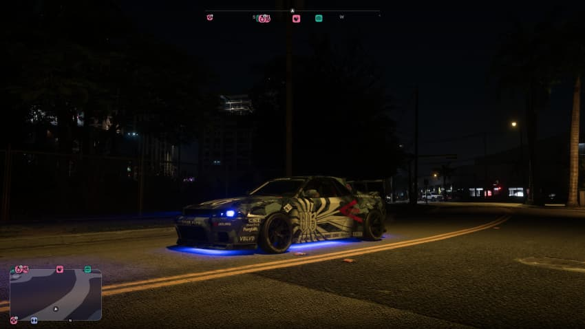
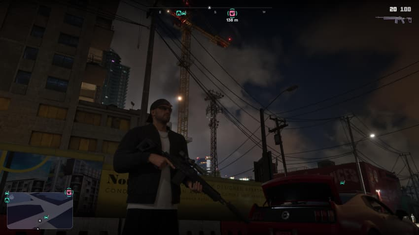
사실 GTA 6에서 가장 좋았던 요소는 바로 수집요소들임.
무기와 차종, 의류. 그리고 헤어샵마다 있는 시그니쳐 헤어들. 그리고 제이슨이 찰 수 있는 시계라던지, 루시아의 주얼리. 다양한 수집요소들이 존재함.
이전작들이 오픈월드 갓겜 치고는 '탐험에 대한 보상'이 좀 미미했는데,
GTA 6의 경우에는 이전작들인 레드 데드 리뎀션 2에서 영향을 꽤 많이 받은 모습이 좋았음.
특히 이 노란색 이름표의 네임드 무기들이 은근 모으는 재미가 쏠쏠함.
이번 작 부터 지역 갱단 / 팩션들을 털어먹을 수 있는 캠프 컨텐츠가 하나 있음.
냅다 총 들고 들어가서 보약이든 수집요소들이든 싹 다 털어먹고 나오면 되고
가끔은 희귀한 커스텀 차량도 주니까 주기적으로 쳐들어가서 털고 나오는 재미가 있었음.
메인 스토리만 밀면 전투 요소들이 좀 아쉬워서 심심할 수 있었는데
나름 파크라이 처럼 캠프 클리어 요소도 집어넣은데다가
플레이어 모션이 주는 재미가 라스트 오브 어스 2 의 전투 매커니즘이랑 비슷해서
노 리턴 모드를 꽤 오래했던 나에게는 이 GTA 6의 캠프요소가 너무 마음에 들었음.
원하는 만큼 전투 요소를 가져다 주니 이 부분에서의 불만은 거의 제로인데
한가지 아쉬운게 있다면, 도심 캠프를 털어먹을 때 소음기를 써야 경찰이 오는 속도가 좀 늦춰지는 점이랑
다 털어먹기도 전에 경찰 때문에 째야하는 점이 좀 아쉬울 따름.
단, 캠프들은 일정 시간이 지나면 복구 되니까 귀중품을 한번에 다 털어가지 말라는 의도가 좀 보이긴 했음.
여하튼, 엔딩 전까지 레이싱 컨텐츠나 기타 미니 게임들은 살짝 손만 댔는데
이 캠프들은 뜨는 족족 미친 듯이 쳐들어가서 털고 나왔음.
아마 스토리 별로다. 노잼이다 하는 사람들도 캠프를 털때는 재미를 느낄 거임. 보상의 리턴이 확실하니까.
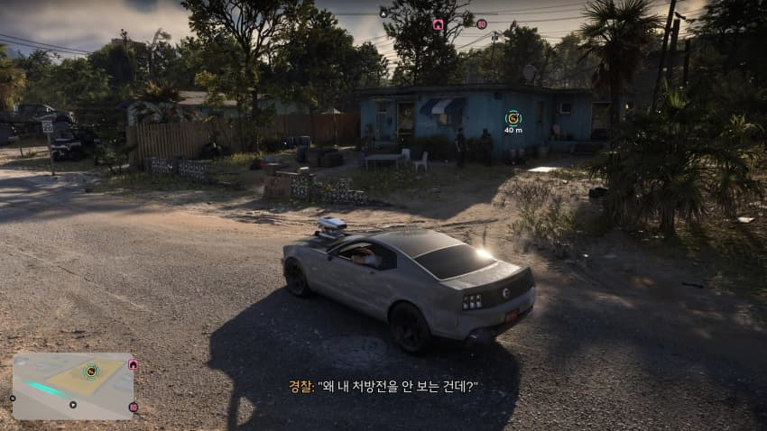
다만 모든 캠프가 전투로 이루어지는 건 아님.
이런식으로 서브 퀘스트 라던지, 특수 기믹이 들어 가 있는 캠프도 있지만
그냥 총 들고 쳐들어가서 경찰 죽이고 오는 것도 유저의 몫.
캠프 이야기가 길었는데,
제목의 캠프 외에도 감탄한 부분들이 꽤 많음
일단 캐릭터 코디를 비롯한 커스터마이징 관련 컨텐츠가 굉장히 맘에 듬.
기본적으로 전작들은 티셔츠를 입으면 그냥 티셔츠 하나만 걸치거나 바지에 따라서 조합이 되거나 하는 형식이었는데
이번 6 부터는 티셔츠를 정리해서 바지 안으로 넣을지, 아니면 그냥 빼고 다닐지, 자켓을 끝까지 닫을지, 아니면 열고 다닐지.
이런 세세한 부분의 미세 조정이 되어서 다양한 연출이 가능함.
전작들에서도 있던 기능들이 좀 더 세세 해 진 느낌이라, 이 부분은 직접 플레이 하면서 느껴보면 좋을 듯.
그 외에도 다양한 파츠들을 바꾸거나 달 수 있는 무기 개조와
컬러링을 할때 여러 프레임을 지정해서 세부적으로 할 수 있다는 것도 좋았음.
게다가 구입한 무기는 바닥에 버리거나 해도
개인 차량의 트렁크나 로커를 통해 사라지지 않고 유지가 가능한 것도
내 개인 소유의 아이템이라는 아이덴티티를 확실하게 해 줌
차량 커스텀은 솔직하게 할 말이 크게 없음.
좋아진 부분은 차체 개조라던지 있겠으나, 이미 GTA 온라인을 한 유저에게는 그렇게 새롭다고 느낄 만한 부분이 적어 아쉬움.
하지만, 노란 네임드 차량을 수집 하다보면 좀 이야기가 달라질 것임
5에서 차고를 구매하는 게 좀 의문인 부분들이 없잖아 있었는데
6에서는 이런 차량 수집 때문에라도 차고를 구매하기 위해 돈을 버는 연계 구조로 유도가 되어서
나름 괜찮았던 동기부여였던 느낌임.
이러한 연유로, 나름 미션 외 오픈월드 활동을 하면서 롤플레잉 요소들을 잘 갖추어 놓았고
필자는 그 중에서도 캠프 공략이 이 GTA 6 오픈월드의 전투매커니즘과 잘 맞물리는 좋은 요소라고 생각함.
5보다 더 발전한 부분이라고 느끼는 바임.
2. 오픈월드 인카운터
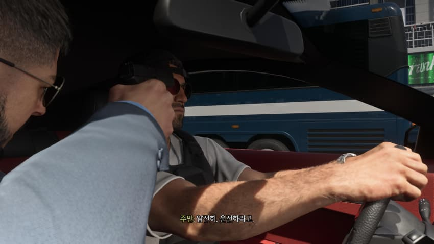
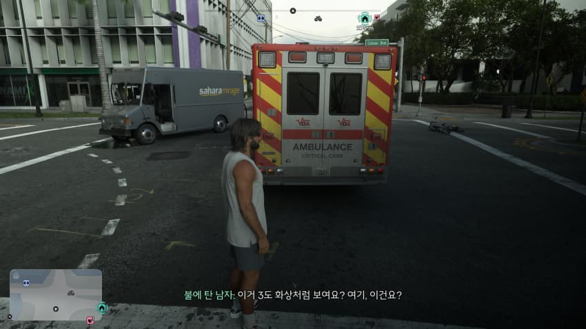
이 GTA 6 의 세계엔 엄청나게 많은 수의 인카운터들이 존재하고, 엔딩 까지 진행한 필자도 아직 못본 게 많다고 확신함.
엔딩을 본 필자는 좀 쉰 다음에 이 인카운터들과 미처 못했던 서브 미션들을 밀 생각인데
그중에서도 아직 3분의 1도 못본 인카운터들에 대한 기대가 큼.
기본적으로 필자가 만나본 기억에 남는 인카운터로는
영화 '콜래트럴' 을 패러디 한 인카운터와
길가다가 대기업 수송차량에 치여서 차가 불타고 본인도 다쳤는데, 보험금 올리겠다고 다시 불타는 차량안에 들어가는 미친 사람의 이야기가 있었음.
전자나 후자나 보상이 n만 달러 수준이라 좋았던 것도 있지만
전자 콜래트럴 패러디의 경우, 암살자가 건물안에 들어갔을 때 따라가서 죽이든지, 아니면 그냥 왔던 길 타고 되돌아 가던지 두가지 선택지를 주고, 플레이어의 몫으로 맡김.
후자의 경우에도 마찬가지. 뇌물을 받는다고 하면 나중에 문자로 결과와 2만 달러 정도를 송금해줌.
뭔가 이 인카운터들이 도시를 살아있는 느낌으로 지속되게 하고, 운전하면서 마주칠 수 있는 온갖 욕설들이 가끔은 내가 부산에 온 건지 하는 착각에 들게 함.
아직 전부 보지 못한 인카운터들이 많아서 이 부분에서는 일각만 보고 완전히 평가하긴 어렵겠으나,
엔딩 시점까지도 마주칠 수 있는 수가 적은 걸 보니
확실히 메인 미션은 스튜디오 헤드인 샘 하우저의 말 처럼, 오픈월드라기보다는 액션 어드벤쳐라고 보는게 맞을지도 모르겠음.
3. 락스타가 궁극적으로 추구한 마이클 만 영상 스타일의 그래픽
GTA를 만든 스튜디오 락스타의 헤드, 하우저 형제는 본인들이 옛날부터 여러 범죄 영화에 많은 영향을 받았다고 말했고,
그 중에서 가장 큰 영향을 많이 받은 건 영화 감독 '마이클 만' 이라고 언급한 바 있음.
게다가, 바이스 시티의 원류가 된 '마이애미 바이스'의 제작자와 극장판의 감독은 마이클 만이기도 한데,
우리에게는 아마 영화 '히트', '콜래트럴'로 유명한 영화 감독임.
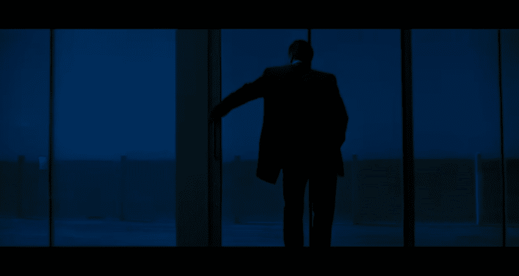
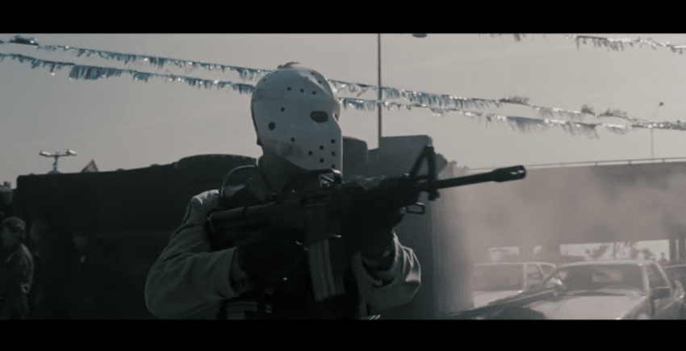
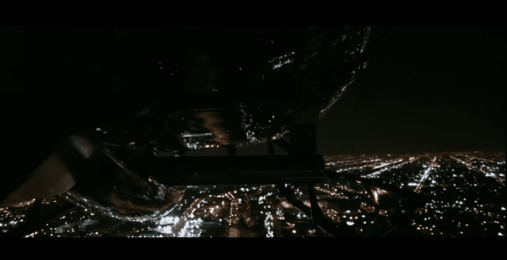
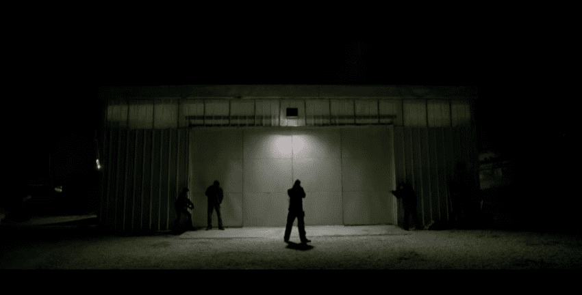
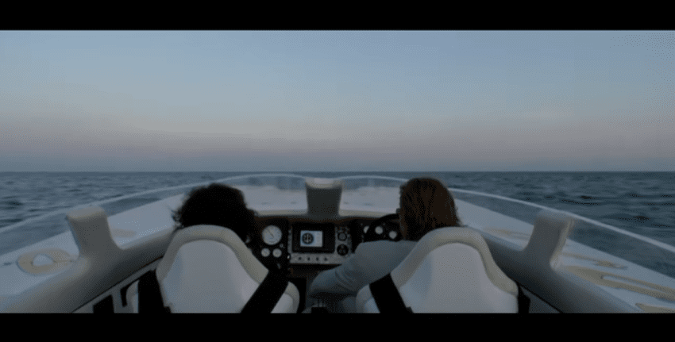
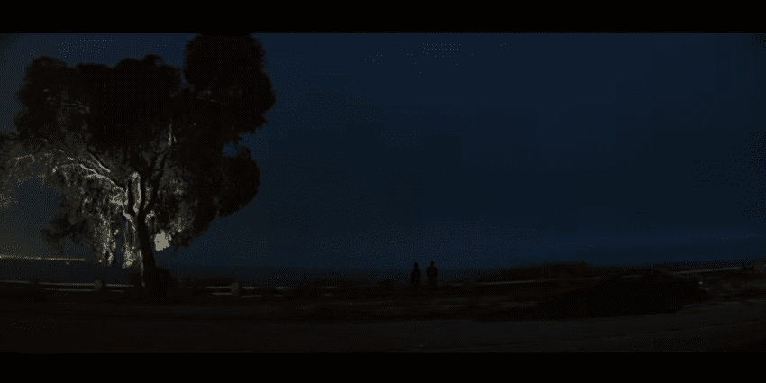
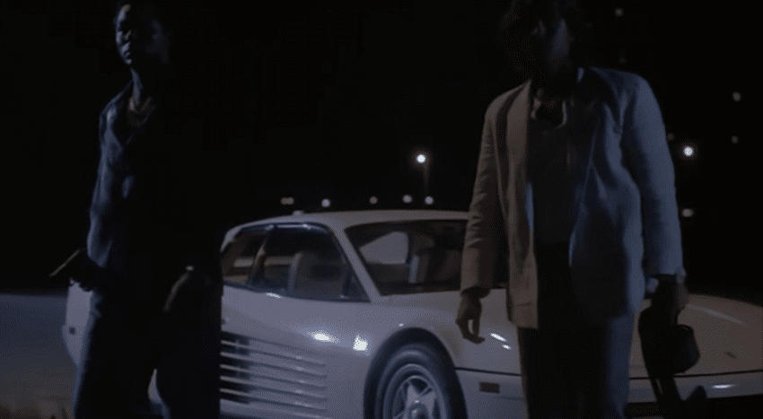
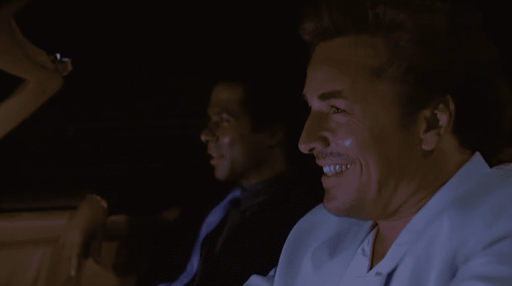
마이클 만 영화를 쭉 보고 있으면 느껴지는 화면의 톤은
형형색색의 미장센들이 존재하나, 기본적으로 강조하는 컷이 아닌 이상 그의 필름에는 무드를 맞추기 위한 숱한 노력이 돋보임.
대부분은 아니지만, 그의 필모그래피에서 영화사에 족적을 남긴 영화들을 보면
정장과 방탄복을 걸친 사내들의 뜨거운 범죄를 다룬 이야기들이 유명하고,
이 과정들을 묘사하는 마이클 만의 연출 스타일은
등장인물들이 치루는 범죄가 마치 직업처럼 느껴지게 하는 프로페셔널 함에 있음.
그 톤을 살리기 위해서 그의 영상에는 일종의 탐미주의적인 시선으로 카메라가 돌아가는데
밤에는 대비되는 콘트라스트와 점처럼 수놓아진 하이라이트가 있고
낮과 저녁에는 차갑거나 건조한 모노톤의 세계가 있음.
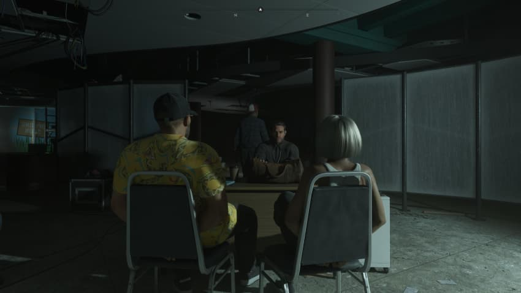
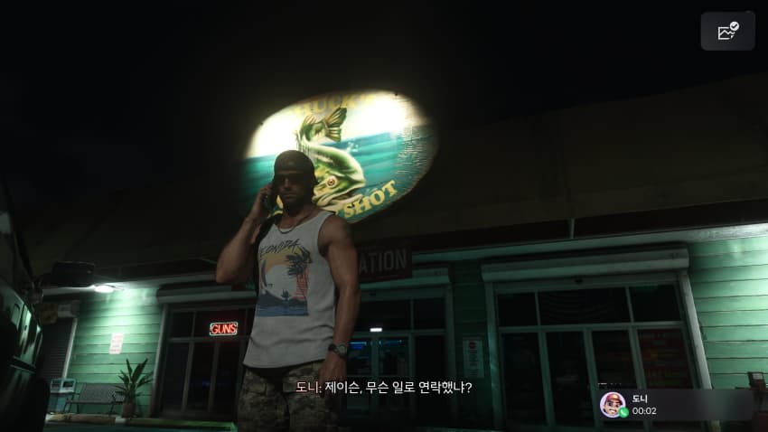
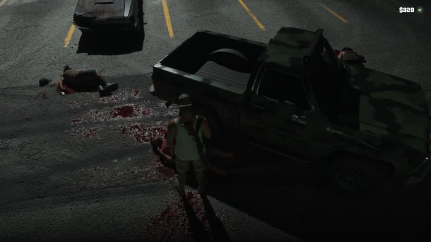
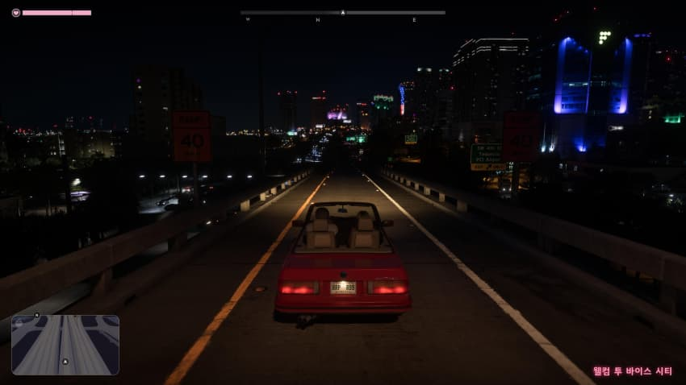
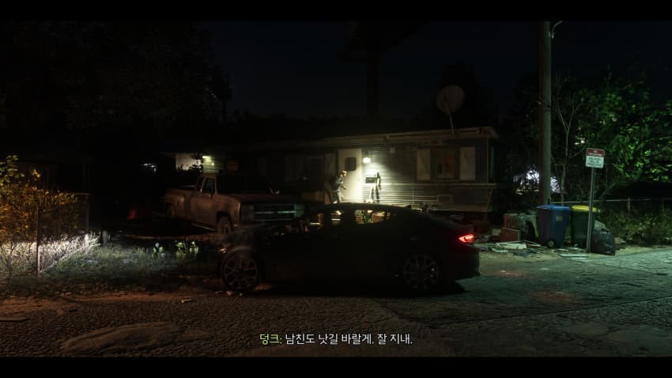
아무래도 바이스 시티의 모티브 자체가 '마이애미 바이스' 인 만큼,
그들이 추구하고자 한 영상미도 이쪽이 아니었을까. 라는 개인적인 생각이 있었고
엔딩을 본 다음 마이클 만의 영화 몇편을 다시 보고 오니
왜 일부러 '영화 화상'의 느낌을 주었는지, 그리고 DLSS5로 이 이미지들을 망치는 게 얼마나 무의미한지 깨닿 게 되었음
물론 호불호야 갈리는 영역이겠지만, 애초에 인카운터로 콜래트럴을 넣어놓은 시점에서 누구를 리스펙하는지 절절히 느껴져서 좋았음.
개인적으로 선호하는 시간대는
늦저녁에 땅거미가 진 시간대랑, 새벽녘. 그리고 밤의 바이스 시티를 좋아하는데
이때 한번 돌아 다녀보면, 단순히 그래픽 요소를 넘어서 필름 느낌을 어떻게 내려고 했는지 노력이 보임.
레데리 2에서도 영화 '비겁한 로버트 포드의 제시 제임스 암살 (2007)' 에서 보여줬던 영상의 톤과,
그 외 미장센이 좋았던 '데어 윌 비 블러드' 같은 영화들의 촬영을 따라하기 위해 숱한 노력이 보였는데
아무래도 락스타 개발진들은 수장의 영향인지는 몰라도 영화에서 많은 모티브를 가져오는 것 같아서
좋은 의미로 그 장르적 세계를 존중하는 느낌이 있음.
아무튼, 단순히 그래픽이 좋다 나쁘다. 기술적으로 어떻든
그런 숫자들로 치부하기에는 확실한 아트디렉션이 있고
필름의 구현을 위해서 노력한 흔적들이 빛나는 것이
새삼 개발 기간이 긴 이유를 느끼게 해줘서 좋았음.
여담이지만
개인적으로 락스타 게임 중에 제일 좋아하는 게임이 맥스페인 3인데
아까도 말했듯이 락스타라는 회사 자체가 게임을 만들 때
모티브를 따올 영화를 일부러 몇개 선정하는 것 같음.
맥스페인 3도 데이비드 핀처의 초창기 필름 스타일인 세븐이라던지,
가이리치의 록 스탁 앤 투 스모킹 배럴즈, 스내치 처럼 정신없는 스타일의 연출을 선보인 바 있는데
그때도 유저들이 그래픽을 왜 일부러 글리치 하는 거지? 라는 의문을 항상 가졌음.
그냥 스튜디오 기조 자체가 좋아하는 영화 스타일로 밀고 나가는 기조가 없잖아 있는 듯...
4. 하지만 스토리가 꼭 이랬어야 했을까?
다시 0으로 돌아와서,
우린 이야기에 대한 결론을 지어야 함.
게임을 진행하는 내내 우리는 루시아나 제이슨. 두 캐릭터들을 지겹도록 봐 왔고
대부분 사고를 치는 쪽은 루시아라서
게임을 해본 사람들이라던지, 그냥 웹상 스포를 본 사람들이라던지.
밉상인 이미지는 피하기 힘들겠다는 생각이 들었음.
애초에 지 성질 못이겨서 라이드미에서 짤린 것도 모자라
식당에서 돈도 못내서 어떻게든 현금을 마련해야 겠다는 생각이
총들고 가게를 터는거면, 그건 불쌍한 게 아니라
그냥 병신이지...
그 덕택에 깜빵 신세를 졌고
자기 아들의 양육권에 대해서도 제대로 된 주장을 못하는 밑바닥 인생으로 처박혔지만
사실 이 부분에서 그 누가 루시아를 좋아할 수 있을까 하는 의문이 들었음.
본인 또한 외노자 시절에
야밤에 근처 마켓에 들렀다가
흑인들 두명에게 붙잡혀 믹스테이프를 칼로 들이민채로 강매 당하여
지갑에서 200불을 뜯긴 경험이 있음.
나는 그 이후로 좀 건실하게 살지 못하는 사람들... 범죄로 빠질 수 밖에 없었다는 핑계를 대는 슬럼가의 청년들이나
그들이 듣는 트랩힙합이라던지 스니칭이라던지, 뭔 개 좆병신같은걸 힙합이라는 범주아래 범죄를 문화라고 쳐 빠는 것에 대한 싫증을 느끼고 있었는데
그걸 검머외 씨발년들이 한국에 쳐 가저온것도 개짜증나고 지들이 무슨 할렘가 흑인인 척 착각하는 호미새끼들도 문제인데
그 개병신같은 감정을 GTA의 주인공에게서 느껴야하는게 맞냐는 생각이 너무 크게 드는거임.
근데 딱히 게임이 이 루시아를 세탁하려는 움직임은 없음. 걍 범죄자는 범죄자고, 애초에 같이 눈맞아서 나도는 제이슨도 같은 범죄자임.
총맞고 일어나자마자 하는게 강도임 강도. 몸풀자고 하는게 그런 일이면 얘도 뇌가 어디 맛이 갔음.
근데, 필자가 0에서 했던 이야기가 기억 나는 사람이 있을거임.
"떠날 때를 알아야 해. 제이슨."
루시아, 제이슨.
둘의 엔딩이 그 어느것도 온전치 못한 반푼이 엔딩에다가
히든 엔딩의 조건도 모아놓은 계좌의 돈인 이유는 간단함
둘은 끝까지 가버렸음. 어떤 의미로든.
오히려 게임을 깨고, 둘 다 살아남아서 토미랑 같이 사는 엔딩이 너무 이상하게 보일 정도로
그냥 길가에서 둘이 죽는 엔딩이 오히려 서사적으로 완성도가 있다는 것이 내 생각임
이 두 병신들이 뭔가 회개하거나 마음을 바꾸거나 할 거라고 생각은 안 함. 그래서 그 하드 드라이브의 미혹을 못 버린 거고.
결론적으로 이 둘을 제대로 처리 하지 못한 그 새끼가 어지간히 무능 했다는 게 느껴짐.
아무튼, 스토리의 엔딩은 나는 배드 엔딩 쪽이 그간 쌓아온 서사에 더 맞다는 생각이 들었음.
만약 둘 에게서 일말의 애정이 느껴졌다면 아마 해피 엔딩으로 가려는 사람들이 많겠지만,
나는 딱히 그러고 싶진 않았음. 적어도 둘 중 하나는 죽어야 한다고 생각했기에, 죽는다면 역시 루시아가 더 낫겠지.
이런 연유로, 전작 주인공들보다 이 커플의 임팩트가 약한게 별 수가 없음
이야기는 처음부터 끝까지 두 커플이 더이상 나아가지 말고 중간에 멈춰서 건실하게 살라고 이야기함
심지어, 얘네들에게 새 신분을 만들어주려는 사람 조차도 루시아에게 하는 말이
'그냥 제이슨 밀고하고, 증인보호 신청해서 살아라. 그럼 너는 미국에서 살 수 있잖아' 같은 이야기임
모든 등장인물 까진 아니더라도, 대다수의 사람들이
'적당히 안주하고 현재에 만족하라'는 이야기를 하는데
브레이크가 없는 건 둘 뿐이었음.
근데 오히려 그런 장치들 때문에 스토리를 끝까지 봤고
주인공들에 대한 부정적인 이미지는 제쳐두더라도,
당장 보니 앤 클라이드를 언급 하는 사람이 겜안분이라는 걸 어느정도 깨달은 바,
원래 그리고 싶었던건 마이애미 바이스가 아니었을까 하는 생각도 듬.
얼마든지 더 재미있게 만들 수 있었던 스토리라고 생각함.
특히 과거작인 바이스시티의 주인공을 보면, 그냥 스카페이스의 알 파치노보다 더 한 미친새끼인데
왜 이렇게 애매한 둘을 데리고 와서 '바이스 시티'를 보여주는데 급급했을까.
그런 생각이 드는 이야기였음.
단, 이렇게 이야기 한다고 해서
스토리의 완성도가 나쁘다는 이야기는 절대로 아님.
이 부분은 직접 게임을 해보고
남의 경험에 미루어 자신의 판단에 맡기지 말고
자신의 경험에 따라 결론을 내렸으면 좋겠음.
그런 연유로, 내 주관적인 생각으로는
이 스토리의 문제점은 커플이라는 데서 시작함.
여담으로..
사실, 30대가 좀 넘은 사람들에게
애인이나 누가 집에 온다고 하면
청소를 하는게 기본이긴함.
딱히 페미니 뭐니 하는 그런 문제라기 보다는..
걍 손님이 와도 집 청소를 하긴 하잖음...
근데 이제 간만에 여친 오는데 뭐 장단정도야 할 수 있다고 보는데
이걸 무조건 해야하나? 는 아님.
혹시나 해서 초반 챕터를 다시 하면서 이거 안할 수 있나 하고 그냥 고치는 시간 대신에 운동 조지고 해봤는데
그런거랑 관계없이 날짜 지나면 자동진행되는 뭔가가 있어서
이부분은 직접 플레이 해보고 판단하면 좋을 듯.
강제는 아니었음. ㅋㅋ
결론
긴 글 읽어줘서 고맙고
점수를 매기자면
10점 만점에 9점임.
만약에, 스토리에서 '은퇴자'들을 계속 비추지 않았으면
5점까지도 줬을 게임이지만
게임의 메시지를 생각해보면서 엔딩 까지 본 바,
나름 재미와 감동이 있는 이야기였음.
나는 이제 랜덤 인카운터를 찾으러 가겠음.
징비들도 즐거운 바이스시티 여행 되길.
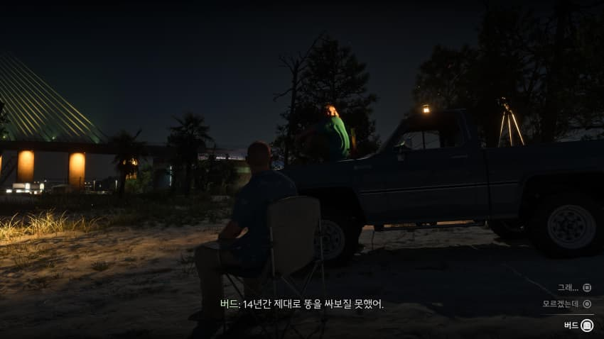
댓글
수집 당시 댓글 465개
· ㅇㅇ · 11.25 20:45:23
· ㅇㅇ · 11.25 20:45:39
· ㅇㅇ · 11.25 20:46:12
ㅇㅇ · 11.24 22:36:20
ㅇㅇ · 11.24 23:10:21
ㅇㅇ · 11.25 09:11:58
· ㅇㅇ · 11.25 20:44:08
ㅇㅇ · 11.25 09:12:29
ㅇㅇ · 11.25 09:16:14
· ㅇㅇ · 11.25 09:23:05
· ㅇㅇ · 11.25 09:23:45
ㅇㅇ · 11.25 09:17:17
히이잉 · 11.25 09:17:20
대환영 · 11.25 09:18:36
· ㅇㅇ · 11.25 09:24:42
· ㅇㅇ · 11.25 09:36:41
· ㅇㅇ · 11.25 09:40:02
· ㅇㅇ · 11.25 11:11:51
· ㅇㅇ · 11.25 14:22:54
· ㅇㅇ · 11.25 16:55:04
· kzine · 11.25 17:03:25
· ㅇㅇ · 11.25 17:05:38
ㅇㅇ · 11.25 09:19:24
ㅇㅇ · 11.25 09:20:16
ㅇㅇ · 11.25 09:22:16
ㅇㅇ · 11.25 09:24:41
ㅇㅇ · 11.25 09:25:45
ㅇㅇ · 11.25 09:26:28
ㅇㅇ · 11.25 09:26:30
식물빌런 · 11.25 09:27:45
ㅇㅇ · 11.25 09:29:31
ㅇㅇ · 11.25 09:30:44
팩트만말해요 · 11.25 09:31:53
ㅇㅇ · 11.25 09:32:10
· ㅇㅇ · 11.25 09:33:00
· ㅇㅇ · 11.25 10:51:29
ㅇㅇ · 11.25 09:36:42
ㅇㅇ · 11.25 09:41:14
· ㅇㅇ · 11.25 09:46:05
· ㅇㅇ · 11.25 10:56:54
· ㅇㅇ · 11.25 15:13:36
ㅇㅇ · 11.25 09:42:23
ㅇㅇ · 11.25 09:43:22
ㅇㅇ · 11.25 09:44:01
ㅇㅇ · 11.25 09:44:21
ㅇㅇ · 11.25 09:44:53
ㅇㅇ · 11.25 09:45:47
ㅇㅇ · 11.25 09:46:43
히이잉 · 11.25 09:49:19
ㅇㅇ · 11.25 09:50:13
아르카나간간인심 · 11.25 09:54:35
ㅇㅇ · 11.25 09:59:09
봇치쟝 · 11.25 10:02:06
777 · 11.25 10:02:31
ㅇㅇ · 11.25 10:09:23
ㅇㅇ · 11.25 10:10:32
ㅇㅇ · 11.25 10:19:49
ㅇㅇ · 11.25 10:31:23
ㅇㅇ · 11.25 10:36:58
ㅇㅇ · 11.25 10:44:20
퐁퐁6
ㅇㅇ · 11.25 10:53:11
· ㅇㅇ · 11.25 10:55:02
ㅇㅇ · 11.25 10:53:42
ㅇㅇ · 11.25 11:11:52
삭제됨 · 11.25 11:14:54
· ㅇㅇ · 11.25 11:29:46
ㅇㅇ · 11.25 11:20:52
ㅇㅇ · 11.25 11:45:54
· ㅇㅇ · 11.25 11:46:18
ㅇㅇ · 11.25 11:55:22
ㅇㅇ · 11.25 12:09:10
ㅇㅇ · 11.25 12:22:08
· ㅇ · 11.25 14:42:01
· ㅇㅇ · 11.25 15:54:59
ㅇㅇ · 11.25 12:32:01
ㅇㅇ · 11.25 12:38:30
ㅇㅇ · 11.25 12:41:16
ㅇㅇ · 11.25 12:59:58
ㅇㅇ · 11.25 13:06:10
한입만 · 11.25 13:18:56
ㅇㅇ · 11.25 13:36:26
ㅇㅇ · 11.25 13:47:01
· ㅇ · 11.25 14:41:02
석궁사수 · 11.25 14:40:01
ㅇ · 11.25 14:41:28
ㅇㅇ · 11.25 14:51:57
ㅇ · 11.25 15:15:41
ㅇㅇ · 11.25 15:55:28
o o · 11.25 16:38:18
ㅇㅇ · 11.25 16:40:48
ks910204 · 11.25 16:41:36
금발미소녀 · 11.25 16:43:30
ㅇㅇ · 11.25 16:57:21
ㅇㅇ · 11.25 17:33:57
ㅇㅇ · 11.25 17:40:15
ㅇㅇ · 11.25 18:18:48
실베현자 · 11.25 18:27:14
ㅇㅇ · 11.25 18:37:27
게임안한 새끼들만 열심히 신포도질중
원또 · 11.25 18:43:14
ㅇㅇ · 11.25 20:18:09
Adriel · 11.23 20:16:15
· 모던워페어 · 11.23 20:18:24
ㅇㅇ · 11.23 20:19:22
레포사도 · 11.23 20:24:27
· 모던워페어 · 11.23 20:31:15
· 레포사도 · 11.23 20:34:41
쟈봉 · 11.23 20:26:19
· 쟈봉 · 11.23 20:26:40
· 모던워페어 · 11.23 20:30:12
· 쟈봉 · 11.23 20:43:51
ㅇㅇ · 11.23 20:26:24
· 모던워페어 · 11.23 20:30:53
· ㅇㅇ · 11.23 20:32:34
갸루매니아 · 11.23 20:31:57
· 모던워페어 · 11.23 20:32:31
· ㅇㅇ · 11.23 20:32:56
· 갸루매니아 · 11.23 20:33:05
무대포 · 11.23 20:35:04
· 모던워페어 · 11.23 20:37:34
· 무대포 · 11.23 20:38:35
· 모던워페어 · 11.23 20:39:10
· 모던워페어 · 11.23 20:40:07
· 무대포 · 11.23 20:40:18
· 모던워페어 · 11.23 20:41:07
ㅇㅇ · 11.23 20:39:52
· ㅇㅇ · 11.23 20:41:35
· 모던워페어 · 11.23 20:42:26
아모른직다 · 11.23 20:39:56
· 모던워페어 · 11.23 20:40:33
락사스 · 11.23 20:46:26
· 락사스 · 11.23 20:55:09
· 모던워페어 · 11.23 20:57:23
· 모던워페어 · 11.23 21:00:23
· 락사스 · 11.23 21:02:06
· 모던워페어 · 11.23 21:04:15
하네네 · 11.23 20:57:48
· 모던워페어 · 11.23 20:58:26
ㅇㅇ · 11.23 20:58:25
· 모던워페어 · 11.23 21:10:45
ㅇㅇ · 11.23 20:58:59
· 락사스 · 11.23 21:03:37
· 아모른직다 · 11.23 21:09:18
· 모던워페어 · 11.23 21:10:32
ㅇㅇ · 11.23 21:02:50
· 모던워페어 · 11.23 21:05:22
· ㅇㅇ · 11.25 09:23:32
ㅇㅇ · 11.23 21:06:44
ㅇㅇ · 11.23 21:14:01
ㅇㅇ · 11.23 21:21:11
· 모던워페어 · 11.23 21:27:53
· ㅇㅇ · 11.24 00:30:08
ㅇㅇ · 11.23 21:27:55
· ㅇㅇ · 11.23 21:28:18
· 모던워페어 · 11.23 21:29:21
ㅇㅇ · 11.23 21:33:03
· 모던워페어 · 11.23 21:54:41
ㅇㅇ · 11.23 21:33:57
· 모던워페어 · 11.23 21:55:16
Posyel · 11.23 21:53:50
· 모던워페어 · 11.23 21:54:57
ㅇㅇ · 11.23 22:11:41
커피없으면죽음 · 11.23 22:15:05
· 모던워페어 · 11.23 22:17:17
ㅎㅈ · 11.23 22:16:01
· 모던워페어 · 11.23 22:18:39
· ㅎㅈ · 11.23 22:19:24
ㅇㅇ · 11.23 22:24:59
· ㅇㅇ · 11.25 09:24:58
ㅇㅇ · 11.23 22:29:35
슬퍼 · 11.23 22:43:06
· 슬퍼 · 11.23 22:44:05
ㅇㅇ · 11.23 22:49:27
SW · 11.23 23:28:00
ㅇㅇ · 11.23 23:29:53
· 모던워페어 · 11.23 23:59:56
배너로드 · 11.23 23:48:33
· 배너로드 · 11.23 23:48:56
· ㅇㅇ · 11.24 21:34:00
오리오크 · 11.23 23:54:34
ㅇㅇ · 11.24 00:25:27
· 모던워페어 · 11.24 00:33:40
FreeWill · 11.24 00:28:10
· 모던워페어 · 11.24 00:34:05
ㅇㅇ · 11.24 00:29:31
ㅇㅇ · 11.24 00:51:59
ㅇㅇ · 11.24 01:02:03
만갤초보 · 11.24 03:51:35
· 모던워페어 · 11.24 04:29:38
ㅇㅇ · 11.24 07:58:32
검은젤리 · 11.24 09:03:27
SOCOM · 11.24 09:55:27
ㅇㅇ · 11.24 10:34:48
ㅇㅇ · 11.24 10:37:35
· ㅇㅇ · 11.24 10:41:49
· ㅇㅇ · 11.24 10:43:02
· ㅇㅇ · 11.25 16:53:45
번항개 · 11.24 10:47:29
ㅇㅇ · 11.24 19:42:03
· ㅇㅇ · 11.25 09:20:59
· ㅇㅇ · 11.25 20:43:58
ㅇㅇ · 11.23 19:14:27
ㅇㅇ · 11.23 19:15:40
퐁퐁
ㅇㅇ · 11.23 19:16:32
ㅇㅇ · 11.23 19:17:52
· 모던워페어 · 11.23 19:19:11
· ㅇㅇ · 11.23 19:26:23
· ㅇㅇ · 11.23 22:39:04
ㅇㅇ · 11.23 19:18:53
· ㅇㅇ · 11.23 19:19:22
· 모던워페어 · 11.23 19:19:26
· 모던워페어 · 11.23 19:20:22
· ㅇㅇ · 11.23 20:30:56
· ㅇㅇ · 11.23 22:18:30
Enter · 11.23 19:23:37
· 모던워페어 · 11.23 19:25:17
ㅇㅇ · 11.23 19:24:29
· 모던워페어 · 11.23 19:24:52
· ㅇㅇ · 11.23 19:30:40
· ㅇㅇ · 11.24 04:11:16
· ㅇㅇ · 11.24 04:23:29
· ㅇㅇ · 11.24 04:56:49
· 모던워페어 · 11.24 04:59:02
· 모던워페어 · 11.24 05:00:54
ㅇㅇ · 11.23 19:27:03
· 모던워페어 · 11.23 19:28:29
ㅇㅇ · 11.23 19:28:11
아비아나 · 11.23 19:28:44
· 아비아나 · 11.23 19:29:54
ㅇㅇ · 11.23 19:29:12
· ㅇㅇ · 11.23 19:30:11
· ㅇㅇ · 11.23 19:32:11
· 모던워페어 · 11.23 19:32:36
· ㅇㅇ · 11.23 19:33:33
· 모던워페어 · 11.23 19:34:28
· ㅇㅇ · 11.23 19:34:59
· ㅇㅇ · 11.23 19:38:39
Lf7f · 11.23 19:29:59
· 모던워페어 · 11.23 19:33:20
· Lf7f · 11.23 19:43:39
ㅇㅇ · 11.23 19:31:07
ㅇㅇ · 11.23 19:32:50
ㅇㅇ · 11.23 19:33:02
ㅇㅇ · 11.23 19:33:18
· 모던워페어 · 11.23 19:33:38
· ㅇㅇ · 11.23 19:38:53
· 모던워페어 · 11.23 19:40:12
ㅇㅇ · 11.23 19:39:17
· 모던워페어 · 11.23 19:39:42
· ㅇㅇ · 11.23 19:40:00
· 모던워페어 · 11.23 19:40:21
ㅇㅇ · 11.23 19:39:41
ㅇㅇ · 11.23 19:40:01
ㅇㅇ · 11.23 19:40:06
· 모던워페어 · 11.23 19:40:39
ㅇㅇ · 11.23 19:42:39
· 모던워페어 · 11.23 19:42:58
· ㅇㅇ · 11.23 19:44:48
· 모던워페어 · 11.23 19:46:09
ㅇㅇ · 11.23 19:44:15
· 모던워페어 · 11.23 19:45:48
· ㅇㅇ · 11.23 19:46:31
· 모던워페어 · 11.23 19:47:09
Cyril-Figgis · 11.23 19:49:55
· 모던워페어 · 11.23 19:56:41
여기게임갤임 · 11.23 19:49:55
· 모던워페어 · 11.23 19:56:21
ㅇㅇ · 11.23 19:50:24
· ㅇㅇ · 11.23 19:51:13
· 모던워페어 · 11.23 19:51:50
· ㅇㅇ · 11.23 19:53:49
· 모던워페어 · 11.23 19:55:35
언성을높이지마라 · 11.23 19:51:17
· 모던워페어 · 11.23 19:52:28
· 언성을높이지마라 · 11.23 20:07:59
· 모던워페어 · 11.23 20:08:46
· 바게스트 · 11.23 22:37:12
ㅇㅇ · 11.23 19:51:20
· 모던워페어 · 11.23 19:52:48
ㅇㅇ · 11.23 19:52:34
· 모던워페어 · 11.23 19:53:41
· ㅇㅇ · 11.23 19:53:42
ㅇㅇ · 11.23 19:53:55
· 모던워페어 · 11.23 19:55:18
ㅇㅇ · 11.23 20:01:28
· 모던워페어 · 11.23 20:04:21
ㅇㅇ · 11.23 20:01:32
ㅇㅇ · 11.23 20:05:16
SyngUp! · 11.23 20:05:26
ㅇㅇ · 11.23 20:07:31
· 모던워페어 · 11.23 20:11:40
ㅇㅇ · 11.23 20:08:46
ㅇㅇ · 11.23 20:10:25
· 모던워페어 · 11.23 20:11:28
· 파모 · 11.23 20:33:15
· 모던워페어 · 11.23 20:34:07
· 파모 · 11.23 20:35:01
ㅇㅇ · 11.23 20:15:21
ㅇㅇ · 11.23 20:16:05
· 모던워페어 · 11.23 20:18:16
· ㅇㅇ · 11.23 20:18:51
· ㄴㄴ · 11.23 18:44:42
· 모던워페어 · 11.23 18:46:58
ㅇㅇ · 11.23 18:44:30
ㅇㅇ · 11.23 18:46:02
· ㅇㅇ · 11.23 19:18:05
ㅇㅇ · 11.23 18:46:22
· ㅇㅇ · 11.23 18:48:07
ㅇㅇ · 11.23 18:46:23
· 모던워페어 · 11.23 18:48:10
· 모던워페어 · 11.23 18:49:11
· ㅇㅇ · 11.23 18:50:19
· 모던워페어 · 11.23 18:51:22
ㅇㅇ · 11.23 18:48:26
ㅇㅇ · 11.23 18:48:59
· 모던워페어 · 11.23 18:49:33
ㅇㅇ · 11.23 18:49:21
· 모던워페어 · 11.23 18:49:47
· ㅇㅇ · 11.23 18:53:39
· ㅇㅇ · 11.23 18:56:22
· 모던워페어 · 11.23 18:59:11
· ㅇㅇ · 11.23 18:59:53
· ㅇㅇ · 11.23 19:00:05
· 모던워페어 · 11.23 19:01:27
· ㅇㅇ · 11.23 19:30:59
두사쟝 · 11.23 18:51:10
· 모던워페어 · 11.23 18:51:40
· 연재글지우는실성 · 11.23 18:53:21
· ㅇㅇ · 11.25 16:02:16
ㅇㅇ · 11.23 18:52:59
ㅇㅇ · 11.23 18:53:42
· 모던워페어 · 11.23 18:58:05
ㅇㅇ · 11.23 18:54:20
· 모던워페어 · 11.23 18:58:02
· ㅇㅇ · 11.23 18:58:40
· 모던워페어 · 11.23 19:04:48
· ㅇㅇ · 11.23 19:09:28
· 모던워페어 · 11.23 19:10:16
· ㅇㅇ · 11.23 19:16:22
ㅇㅇ · 11.23 18:54:42
· 모던워페어 · 11.23 18:57:26
어린이사랑 · 11.23 18:55:39
뜨거운것이좋아 · 11.23 18:56:01
· 모던워페어 · 11.23 18:57:06
· 뜨거운것이좋아 · 11.23 19:22:14
· 모던워페어 · 11.23 19:24:07
대파왕자 · 11.23 18:56:32
ㅇㅇ · 11.23 18:57:07
· 모던워페어 · 11.23 19:00:45
ㅇㅇ · 11.23 18:57:51
· ㅇㅇ · 11.23 18:59:07
· 모던워페어 · 11.23 19:00:29
· ㅇㅇ · 11.23 19:04:03
· 모던워페어 · 11.23 19:05:33
Schmuserkadser · 11.23 18:59:13
· 연재글지우는실성 · 11.23 18:59:52
· 연재글지우는실성 · 11.23 18:59:58
ㅇㅇ · 11.23 19:00:04
ㅇㅇ · 11.23 19:01:30
· 모던워페어 · 11.23 19:02:23
· ㅇㅇ · 11.23 19:10:59
· ㅇㅇ · 11.23 19:11:35
ㅇㅇ · 11.23 19:01:32
밐다 · 11.23 19:02:17
· 모던워페어 · 11.23 19:03:08
· 모던워페어 · 11.23 19:04:02
ㅇㅇ · 11.23 19:03:41
ㅇㅇ · 11.23 19:04:57
· 모던워페어 · 11.23 19:06:29
ㅇㅇ · 11.23 19:06:41
· 모던워페어 · 11.23 19:08:45
· ㅇㅇ · 11.23 19:48:28
· ㅇㅇ · 11.23 19:53:50
· 모던워페어 · 11.23 19:54:36
· ㅇㅇ · 11.23 19:56:37
· 모던워페어 · 11.23 19:57:06
ㅇㅇ · 11.23 19:06:44
ㅇㅇ · 11.23 19:07:23
· ㅇㅇ · 11.23 19:11:21
· ㅇㅇ · 11.23 21:17:48
ㅇㅇ · 11.23 19:09:55
· 모던워페어 · 11.23 19:11:29
ㅇㅇ · 11.23 19:10:32
· 모던워페어 · 11.23 19:11:55
· ㅇㅇ · 11.23 19:12:10
· ㅎㅈ · 11.23 20:10:21
ㅇㅇ · 11.23 19:10:58
· ㅇㅇ · 11.23 19:11:30
· 모던워페어 · 11.23 19:12:15
· ㅇㅇ · 11.23 19:13:56
· ㅇㅇ · 11.23 19:14:00
· ㅇㅇ · 11.23 19:15:29
· 모던워페어 · 11.23 19:15:49
· 모던워페어 · 11.23 19:16:13
· ㅇㅇ · 11.23 19:18:01
ㅇㅇ · 11.23 19:13:09
갱생중붕 · 11.23 19:13:15
· 모던워페어 · 11.23 19:13:50
· 갱생중붕 · 11.23 19:14:13
· 갱생중붕 · 11.23 19:15:05
· 모던워페어 · 11.23 19:16:46
초격차 · 11.23 18:19:29
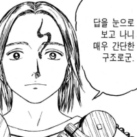
ㅇㅇ · 11.23 18:20:05
· ㅇㅇ · 11.23 18:38:38
· ㅇㅇ · 11.23 18:42:12
ㅇㅇ(127.0.0.1) · 11.23 18:21:03
ㅇㅇ · 11.23 18:21:06
김머중 · 11.23 18:23:52
ㅇㅇ · 11.23 18:27:01
ㅇㅇ · 11.23 18:28:07
감히 9점
을 줘??
?
비추
· 모던워페어 · 11.23 18:29:39
どんぐり · 11.23 18:30:30
ㅇㅇ · 11.23 18:31:00
· ㅇㅇ · 11.23 18:36:27
· 어둠의만갤러 · 11.23 18:39:37
· 연재글지우는실성 · 11.23 18:41:04
· ㅇㅇ · 11.23 18:44:57
· ㅇㅇ · 11.23 18:44:59
· ㅇㅇ · 11.23 18:45:02
· ㅇㅇ · 11.23 18:49:52
· ㅁㄴㅇㄹ · 11.23 18:53:01
· ㅇㅇ · 11.23 19:04:30
· ㅇㅇ · 11.23 19:51:03
· ㅇㅇ · 11.23 21:15:13
· ㅇㅇ · 11.25 09:52:13
ㄹㅇㅋㅋㅋ
ㅇㅇ · 11.23 18:31:43
· ㅇㅇ · 11.23 18:34:18
ㅇㅇ · 11.23 18:32:02
ㅇㅇ · 11.23 18:32:20
ㅁㄴㅇㄹ · 11.23 18:32:51
ㅇㅇ · 11.23 18:33:43
ㅇㅇ · 11.23 18:34:15
ㅇㅇ · 11.23 18:34:29
· 모던워페어 · 11.23 18:35:46
· 모던워페어 · 11.23 18:36:37
· ㅇㅇ · 11.23 18:36:38
· ㅇㅇ · 11.23 18:38:15
· 차캐요 · 11.23 18:39:44
· 모던워페어 · 11.23 18:40:16
· 연재글지우는실성 · 11.23 18:41:51
· 모던워페어 · 11.23 18:42:27
· 아모른직다 · 11.23 20:55:52
ㅇㅇ · 11.23 18:36:31
· ㅇㅇ · 11.23 18:37:28
· 모던워페어 · 11.23 18:37:28
푸하하 · 11.23 18:37:00
ㅇㅇ · 11.23 18:37:39
· 모던워페어 · 11.23 18:39:09
ㅇㅇ · 11.23 18:37:44
ㅇㅇ · 11.23 18:37:52
· 모던워페어 · 11.23 18:39:47
· 즈7 · 11.23 18:43:50
· 모던워페어 · 11.23 18:46:22
· 투슬리스 · 11.23 19:18:25
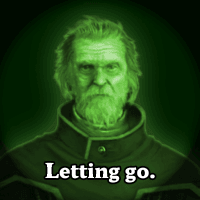
ㅇㅇ · 11.23 18:38:28
· ㅇㅇ · 11.23 18:41:04
어둠의만갤러 · 11.23 18:39:09
ㅎㅈ · 11.23 18:40:43
즈7 · 11.23 18:43:20
· 모던워페어 · 11.23 18:44:22
· 모던워페어 · 11.23 18:45:19
· 모던워페어 · 11.23 18:45:45
· 즈7 · 11.23 18:49:58
· 모던워페어 · 11.23 18:51:02
· 버걱스 · 11.24 23:22:38
ㄴㄴ · 11.23 18:44:16